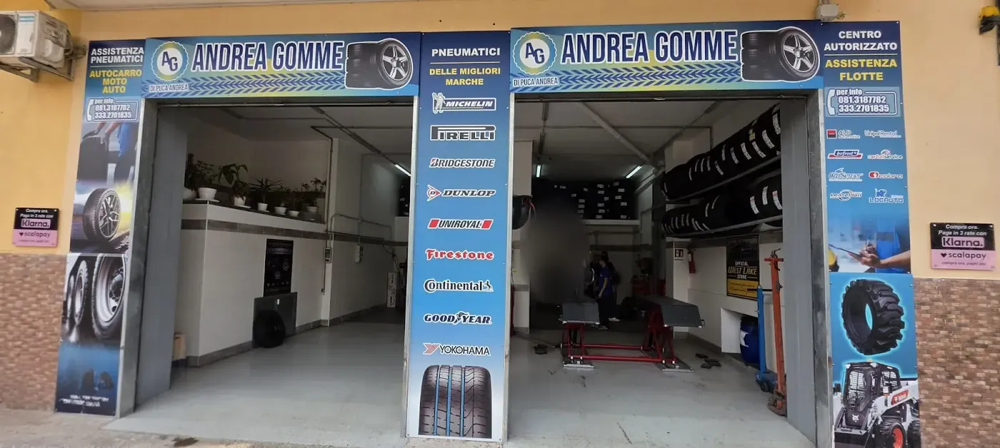
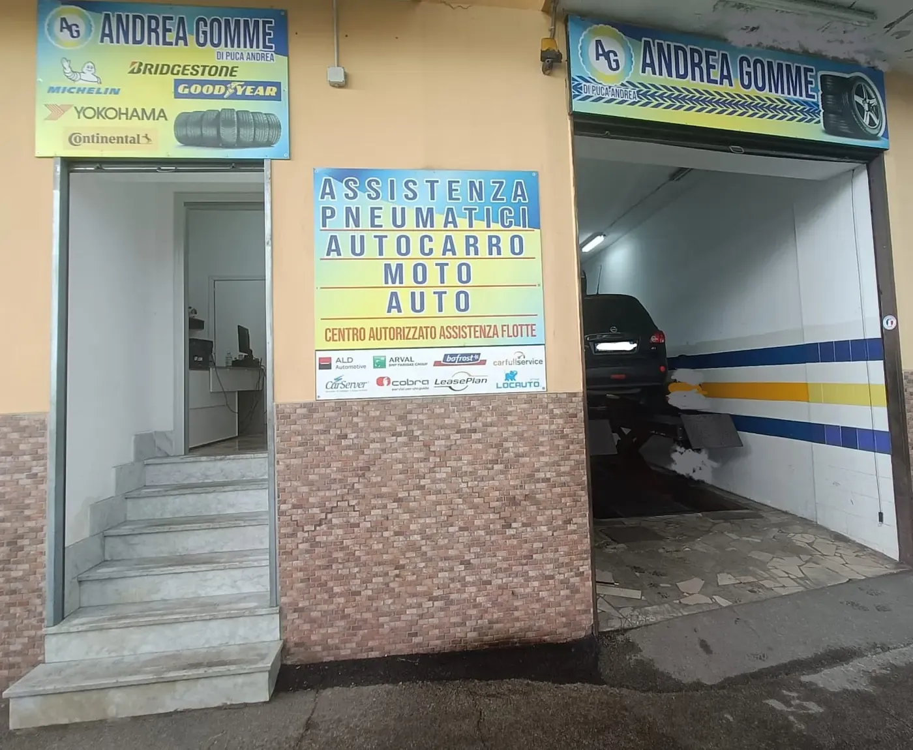
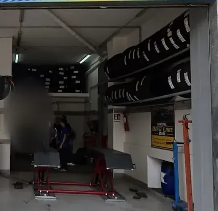
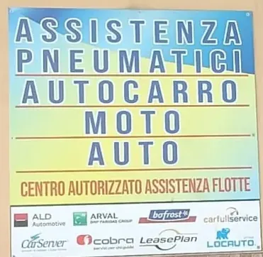

AG
Andrea Gomme
Gommista · Sant'Antimo
Foto



Foto della scheda Google dell'attività.
Servizi
- Pneumatici auto, moto e autocarro
- Le migliori marche
- Centro autorizzato flotte
Michelin, Pirelli, Bridgestone, Dunlop, Continental, Goodyear, Yokohama, Firestone e Uniroyal.
Dalle insegne dell'officina.
Recensioni
4,7 · 53«Ben attrezzato prezzi modici personale professionale e qualificato. Ampia gamma di ruote e cerchi di tutte le marche.»
«Qui in centro è uno dei più competenti e professionali, dove trovi sempre un buon compromesso tra prezzi e qualità... a meno che non ci si voglia allontanare di decine di km»
«Una officina piccola, quindi c'è quasi sempre un po da aspettare. A parte questo, sono molto gentili e professionali. Consiglio questa attività al 100% !»
«Serietà e professionalità. Attività indiscutibile»
Da Google, senza modifiche, nomi abbreviati.
Orari
| Lunedì | 08:00–13:00 · 14:30–19:00 |
|---|---|
| Martedì | 08:00–13:00 · 14:30–19:00 |
| Mercoledì | 08:00–13:00 · 14:30–19:00 |
| Giovedì | 08:00–13:00 · 14:30–19:00 |
| Venerdì | 08:00–13:00 · 14:30–19:00 |
| Sabato | 08:00–14:30 |
| Domenica | Chiuso |
Orari della scheda Google: nei festivi possono cambiare, chiamate per conferma.